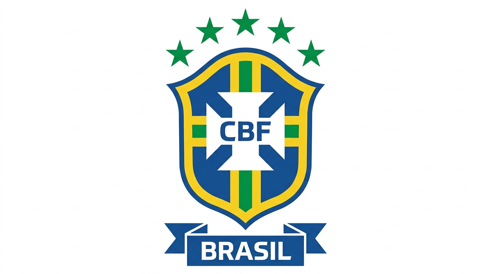

Sobre a Seleção Brasileira
A Seleção Brasileira de Futebol representa o Brasil nas principais competições internacionais. É uma das seleções mais famosas da história do futebol.

Conheça um pouco sobre a história da nossa seleção
A Seleção Brasileira de Futebol representa o Brasil nas principais competições internacionais. É uma das seleções mais famosas da história do futebol.
A Seleção Brasileira possui uma história muito importante no futebol mundial.
Ao longo da história, muitos jogadores importantes representaram a Seleção Brasileira, como Pelé, Ronaldo, Ronaldinho Gaúcho, Romário e Neymar.